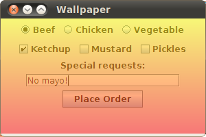

Lección: Usando Otras Características de Swing
Cómo Decorar Componentes con la Clase JLayer
La clase JLayer es un decorador flexible y potente para los componentes de Swing. Le
habilita a dibujar sobre los componentes y a responder a los eventos del componente sin modificar el componente
subyacente directamente.
La clase JLayer en Java SE 7 es similar en espíritu al proyecto
Proyecto JxLayer en
java.net. La clase JLayer
estaba inicialmente basada en el proyecto JXLayer, pero esta IPA evolucionó separadamente..
Este documento describe ejempoos que muestran el poder de la clase JLayer. El código fuente
completo está disponible.
- Usando la Clase
JLayer - Usando la Clase
LayerUI - Dibujar sobre Componentes
- Responder a Eventos
- Animar un Indicador de Ocupado
- Validar Campos de Texto
Para una breve introducción al material en esta página, mira el siguiente video.
Se requiere un navegador web con JavaScript habilitado y una conexión a Internet para este vídeo. Si no puede ver el vídeo, inténtelo viéndolo en YouTube.
Usando la Clase JLayer
La clase javax.swing.JLayer es la mitad de un equipo. La otra mitad es la clase
javax.swing.plaf.LayerUI. Suponga que quiere hacer algún dibujo personalizado encima del objeto
JButton (decorar el objeto JButton). El componente que quiere decorar es el
objetivo.
- Crear un componente objetivo.
-
Crear una instancia de la subclase
LayerUIpara hacer el dibujado. -
Crear un objeto
JLayerque envuelva el objetivo y el objetoLayerUI. -
Use el objeto
JLayeren su interfaz de usuario al igual que usaría el componente de destino.
Por ejemplo, para agregar una instancia de una subclase JPanel a un objeto JFrame,
usted haría algo similar a esto:
JFrame f = new JFrame();
JPanel panel = createPanel();
f.add (panel);
Para decorar el objeto JPanel, haga algo similiar a esto en su lugar:
JFrame f = new JFrame();
JPanel panel = createPanel();
LayerUI<JPanel> layerUI = new MyLayerUISubclass();
JLayer<JPanel> jlayer = new JLayer<JPanel>(panel, layerUI);
f.add (jlayer);
Use genéricos para asegurarse de que el objeto JPanel y el objeto LayerUI son tipos
compatibles. En el ejemplo anterior, tanto el objeto JLayer como el objeto
LayerUI son usados con la clase JPanel.
La clase JLayer es habitualmente generada con el tipo exacto de su componente de vista, mientras
que la clase LayerUI es diseñada para ser usada con las clases JLayer de su
parámetro genérico o cualquiera de sus ancestros.
Por ejemplo, un objeto LayerUI<JComponent> puede ser usado con un objeto
JLayer<AbstractButton>.
Un objeto LayerUI es responsable de la decoración personalizada y del manejo del evento de un
objeto JLayer. Cuando crea una instancia de una subclase de LayerUI, su
comportamiento personalizado puede ser aplicable a cada objeto JLayer con un tipo genérico
apropiado. Es por eso que la clase JLayer es final; todo el comportamiento
personalizado está encapsulado en un su sublclaase LayerUI, de forma que no hay necesidad de hacer
una subclase de JLayer.
Usando la Clase LayerUI
La clase LayerUI hereda la mayoría de su comportamiento de la clase ComponentUI.
Aquí tiene los métodos más comunmente sobreescritos:
-
El método
paint(Graphics g, JComponent c)es llamado cuando el componente objetivo necesita ser dibujado. Para renderizar el componente en la misma forma que Swing lo renderiza, llame al métodosuper.paint(g, c). -
El método
installUI(JComponent c)se llama cuando una instancia de su subclaseLayerUIes asociada con un componente. Realize cualquier inicialización necesaria aquí. El componente que se pasa es el objetoJLayercorrespondiente. Recupere el componente objetivo con el métodogetView()de la claseJLayer. -
El método
uninstallUI(JComponent c)se llama cuando una instancia de su subclaseLayerUIya no está asociada con el componente dado. Limpia aquí si es necesario.
Dibujar sobre Componentes
Para usar la clase JLayer, necesita una buena subclase LayerUI. Los tipos más simples
de clases de LayerUI cambian cómo se dibujan los componentes. Aquí tiene una, por ejemplo, que
pinta un gradiente de color transparente sobre un componente.
class WallpaperLayerUI extends LayerUI<JComponent> {
@Override
public void paint(Graphics g, JComponent c) {
super.paint(g, c);
Graphics2D g2 = (Graphics2D) g.create();
int w = c.getWidth();
int h = c.getHeight();
g2.setComposite(AlphaComposite.getInstance(
AlphaComposite.SRC_OVER, .5f));
g2.setPaint(new GradientPaint(0, 0, Color.yellow, 0, h, Color.red));
g2.fillRect(0, 0, w, h);
g2.dispose();
}
}
El método paint() es donde el pintado personalizado se lleva a cabo. La llamada al método
super.paint() dibuja el contenido del objeto JPanel. Después de configurar una
composición transparente al 50%, el gradiente de color es dibujado.
Después de que la subclase LayerUI sea definida, usarla es simple. Aquí tiene algo de código
fuente que usa la clase WallpaperLayerUI:
import java.awt.*;
import javax.swing.*;
import javax.swing.plaf.LayerUI;
public class Wallpaper {
public static void main(String[] args) {
javax.swing.SwingUtilities.invokeLater(new Runnable() {
public void run() {
createUI();
}
});
}
public static void createUI() {
JFrame f = new JFrame("Wallpaper");
JPanel panel = createPanel();
LayerUI<JComponent> layerUI = new WallpaperLayerUI();
JLayer<JComponent> jlayer = new JLayer<JComponent>(panel, layerUI);
f.add (jlayer);
f.setSize(300, 200);
f.setDefaultCloseOperation (JFrame.EXIT_ON_CLOSE);
f.setLocationRelativeTo (null);
f.setVisible (true);
}
private static JPanel createPanel() {
JPanel p = new JPanel();
ButtonGroup entreeGroup = new ButtonGroup();
JRadioButton radioButton;
p.add(radioButton = new JRadioButton("Carne", true));
entreeGroup.add(radioButton);
p.add(radioButton = new JRadioButton("Pollo"));
entreeGroup.add(radioButton);
p.add(radioButton = new JRadioButton("Vegetal"));
entreeGroup.add(radioButton);
p.add(new JCheckBox("Salsa de tomate"));
p.add(new JCheckBox("Mostaza"));
p.add(new JCheckBox("Pepinillos"));
p.add(new JLabel("Solicitudes especiales:"));
p.add(new JTextField(20));
JButton orderButton = new JButton("Realizar pedido");
p.add(orderButton);
return p;
}
}
Aquí tiene el resultado:

Código fuente:
Ejecutar con Java Web Start:

El método paint() de la clase LayerUI le da un control completo sobre cómo se dibuja
un componente. Aquí tiene otra subclase de LayerUI que muestra cómo el contenido entero de un
panel puede ser modificado usando el procesado de imagen de Java 2D:
class BlurLayerUI extends LayerUI<JComponent> {
private BufferedImage mOffscreenImage;
private BufferedImageOp mOperation;
public BlurLayerUI() {
float ninth = 1.0f / 9.0f;
float[] blurKernel = {
ninth, ninth, ninth,
ninth, ninth, ninth,
ninth, ninth, ninth
};
mOperation = new ConvolveOp(
new Kernel(3, 3, blurKernel),
ConvolveOp.EDGE_NO_OP, null);
}
@Override
public void paint (Graphics g, JComponent c) {
int w = c.getWidth();
int h = c.getHeight();
if (w == 0 || h == 0) {
return;
}
// Solo crea la imagen fuera de pantalla si la que tenemos
// es del tamaño incorrecto.
if (mOffscreenImage == null ||
mOffscreenImage.getWidth() != w ||
mOffscreenImage.getHeight() != h) {
mOffscreenImage = new BufferedImage(w, h, BufferedImage.TYPE_INT_RGB);
}
Graphics2D ig2 = mOffscreenImage.createGraphics();
ig2.setClip(g.getClip());
super.paint(ig2, c);
ig2.dispose();
Graphics2D g2 = (Graphics2D)g;
g2.drawImage(mOffscreenImage, mOperation, 0, 0);
}
}
En el método paint(), el panel es renderizado dentro de la imagen fuera de pantalla. La imagen
fuera de pantalla es procesada con un operador de convolución, después es dibujado en la pantalla.
En interfaz de usuario entero está aun vivo, simplemente borroso:

Código fuente:
Ejecutar con Java Web Start:
Responder a Eventos
Su subclase LayerUI puede también recibir todos los eventos de su componente correspondiente. Sin
embargo, la instancia JLayer debe registrar su interés en los tipos específicos de eventos. Esto
ocurre con el método setLayerEventMask() de la clase JLayer. Habitualmente, sin
embargo, esta llamada se hace desde la inicialización realizada en el método installUI() de la
clase LayerUI.
Por ejemplo, el siguiente extracto muestra una porción de la subclase LayerUI que se registra para
recibir los eventos del ratón y de movimiento del ratón.
public void installUI(JComponent c) {
super.installUI(c);
JLayer jlayer = (JLayer)c;
jlayer.setLayerEventMask(
AWTEvent.MOUSE_EVENT_MASK |
AWTEvent.MOUSE_MOTION_EVENT_MASK
);
}
Todos los eventos que van a su subclase JLayer van enrutados a un método de controlador de eventos
cuyo nombre coincida con el tipo de evento. Por ejemplo, puede responder a los eventos de ratón y de movimiento
de ratón sobreescribiendo los métodos correspondientes:
protected void processMouseEvent(MouseEvent e, JLayer l) {
// ...
}
protected void processMouseMotionEvent(MouseEvent e, JLayer l) {
// ...
}
Lo siguiente es una subclase LayerUI que dibuja un círculo translúcido allá donde el ratón se
mueva dentro del panel.
class SpotlightLayerUI extends LayerUI<JPanel> {
private boolean mActive;
private int mX, mY;
@Override
public void installUI(JComponent c) {
super.installUI(c);
JLayer jlayer = (JLayer)c;
jlayer.setLayerEventMask(
AWTEvent.MOUSE_EVENT_MASK |
AWTEvent.MOUSE_MOTION_EVENT_MASK
);
}
@Override
public void uninstallUI(JComponent c) {
JLayer jlayer = (JLayer)c;
jlayer.setLayerEventMask(0);
super.uninstallUI(c);
}
@Override
public void paint (Graphics g, JComponent c) {
Graphics2D g2 = (Graphics2D)g.create();
// Pinta la vista.
super.paint (g2, c);
if (mActive) {
// Crea un gradiente radial, transparente en el medio.
java.awt.geom.Point2D center = new java.awt.geom.Point2D.Float(mX, mY);
float radius = 72;
float[] dist = {0.0f, 1.0f};
Color[] colors = {new Color(0.0f, 0.0f, 0.0f, 0.0f), Color.BLACK};
RadialGradientPaint p =
new RadialGradientPaint(center, radius, dist, colors);
g2.setPaint(p);
g2.setComposite(AlphaComposite.getInstance(
AlphaComposite.SRC_OVER, .6f));
g2.fillRect(0, 0, c.getWidth(), c.getHeight());
}
g2.dispose();
}
@Override
protected void processMouseEvent(MouseEvent e, JLayer l) {
if (e.getID() == MouseEvent.MOUSE_ENTERED) mActive = true;
if (e.getID() == MouseEvent.MOUSE_EXITED) mActive = false;
l.repaint();
}
@Override
protected void processMouseMotionEvent(MouseEvent e, JLayer l) {
Point p = SwingUtilities.convertPoint(e.getComponent(), e.getPoint(), l);
mX = p.x;
mY = p.y;
l.repaint();
}
}
La variable mActive indica si el ratón está o no dentro de las coordenadas del panel. En el método
installUI(), el método setLayerEventMask() se llama para indicar el interés que la
subclase LayerUI tiene en recibir los eventos del ratón y de su movimiento.
En el método processMouseEvent(), la bandera mActive es establecida dependiendo de la
posición del ratón. En el método processMouseMotionEvent(), las coordenadas del movimiento del
ratón son almacenadas en las variables miembro mX y mY de forma que puedan ser usadas
más tarde en el método paint().
El método paint() muestra la apariencia por defecto del panel, luego superpone un degradado radial
para un efecto de foco:

Código fuente:
Ejecutar con Java Web Start:
Animar un Indicador de Ocupado
Este ejemplo es un indicador animado de ocupado. Demuestra la animación en una subclase de LayerUI
y presenta un fundido de entrada y un fundido de salida. Es más complicado que los ejemplos previos, pero está
basado en el mismo principio de definir un método paint() para el dibujado personalizado.
Pulse el botón Realizar pedido para ver el indicador de ocupado por 4 segundos. Note que el panel está en gris y el indicador gira. Los elementos en el indicador tienen varios niveles de transparencia.
La subclase LayerUI, la clase WaitLayerUI, muestran cómo activar eventos de cambio de
propiedad para actualizar el componente. La clase WaitLayerUI usa un objeto Timer
para actualizar su estado 24 veces por segundo. Esto ocurre en el método objetivo del temporizador, el método
actionPerformed().
El método actionPerformed() usa el método firePropertyChange() para indicar que el
estado interno fue actualizado. Esto dispara una llamda al método applyPropertyChange(), el cual
repinta el objeto JLayer:

Código fuente:
Ejecutar con Java Web Start:
Validar Campos de Texto
El ejemplo final en este documento muestra cómo la clase JLayer puede ser usada para decorar
campos de texto para mostrar si contienen datos váidos. Mientras los otros ejemplos usan la clase
JLayer para envolver paneles o componetes generales, este ejemplo muestra cómo envolver un
componente JFormattedTextField específicamente. También demuestra que una única implementación de
subclase LayerUI puede ser usada para múltiples instancias de JLayer.
La clase JLayer se usa para ofrecer una indicación visual para los campos que tienen datos no
válidos. Cuando la clase ValidationLayerUI pinta el campo de texto, dibuja una X en rojo si los
contenidos del fichero no pueden ser analizados. Aquí está el ejemplo:

Código fuente:
Ejecutar con Java Web Start: